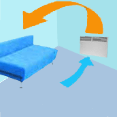
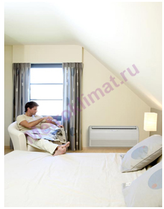
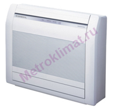

|  | |
Очень часто, при выборе того или иного вида кондиционера или сплит-системы учитывается возможность размещения внутреннего блока. Если отсутствует возможность установки внутреннего блока кондиционера на потолке или, наоборот, на стене, например, в магазинах с большими стеклянными витринами и окнами, то нужно обратить внимание на напольно-потолочный тип кондиционера. Внутренний блок такого кондиционера способен крепиться как на стены, так и на потолок в любом помещении.
Правильное размещение напольно-потолочного кондиционера позволит обезопасить посетителей от возможности простудиться и попасть в зону потока холодного воздуха. |
Основные достоинства напольно-потолочных сплит-систем
Производимые напольно-потолочные кондиционеры имеют небольшую толщину не более 17-24 см. Все современные напольно-потолочные кондиционеры оснащены функцией обогрева. Напольно-потолочные кондиционеры сочетают достоинства потолочных и напольных сплит-систем. Их исполнение позволяет выбирать, соответственно, любой из двух вариантов установки, в зависимости от того, как устроены стены или потолки в вашем помещении. Так, внутренние блоки большинства моделей напольно-потолочных кондиционеров можно расположить вертикально на полу или на стене. Вообще, напольно-потолочный кондиционер - наиболее удачный пример мощного кондиционера при отсутствии подвесного потолка. Поток воздуха движется сверху по траектории, обеспечивая равномерное охлаждение помещения.
Напольно-потолочные кондиционеры существенно отличаются своей мощностью от настенных кондиционеров. В основном их устанавливают в достаточно больших по размеру помещениях. Напольно-потолочные кондиционеры используются при недостаточной мощности настенных кондиционеров, а также не предоставляется возможность установить кондиционер кассетного типа. Мощность по холоду напольно-потолочных сплит-систем от 4 до 15 кВт.
Современные напольно-потолочные кондиционеры способны кондиционировать и смежные помещения при наличие одного внутреннего блока. Установка осуществляется в отверстие перегородки и при вертикальном расположении.
Напольно-потолочные кондиционеры обладают рядом преимуществ, позволяющих конкурировать с другими, более элитными видами кондиционеров. Так, в напольно-потолочные кондиционеры имеют возможность как автоматического, так и ручного управления воздушным потоком. Воздушный поток можно направить в нужном направлении, отрегулировав продольные и поперечные жалюзи. В большинстве случаев, это делается при помощи пульта дистанционного управления. У некоторых моделях предусмотрена ручная регулировка поперечных направляющих потока воздуха.
Если напольно-потолочный кондиционер устанавливается у стены, то воздушный поток направляется вверх, а если установка произведена на потолке, то поток воздуха распределяется горизонтально, вдоль потолка. Существуют современные модели напольно-потолочных кондиционеров, которые распределяют охлажденный воздух одновременно по двум или четырем направлениям. Такие модели существуют у производителя климатической техники DAIKIN . Поток воздуха у этих моделей можно регулировать индивидуально по каждому из направлений при помощи пульта дистанционного управления.
|  |
Варианты установки напольно-потолочных сплит-систем
|  |
Современные напольно-потолочные кондиционеры имеют два варианта установки. Под потолком - этот вид установки напольно-потолочных кондиционеров наиболее распространен при кондиционировании магазинов с большими витринами, стены которых непригодны для размещения внутренних блоков настенного типа. На стене - в непосредственной близости от пола - актуален при кондиционировании небольших помещений, с большими теплопритоками. Напольно-потолочные бытовые кондиционеры могут устанавливаются на один метр и более от уровня пола, в целях подачи мощного потока при охлаждении вверх. Это позволяет обеспечить более равномерно распределять потоки воздуха по всему помещению и комфортность нахождения в нём. |
Места использования напольно-потолочных сплит-систем
В основном установка напольно-потолочных кондиционеров осуществляется в крупных офисах, магазинах и помещениях с большими теплопритоками. В квартирах встретить напольно-потолочные кондиционеры практически невозможно. Основное преимущество напольно-потолочных кондиционеров заключается в способности устанавливать в помещениях, у которых стены не приспособлены к монтажу внутренних блоков.
В офисах с большим количеством сотрудников и оргтехники также можно встретить напольный тип кондиционера, так как из-за больших теплопритоков использование настенной системы будет недостаточно. Нужно помнить, что каждый кондиционер вокруг себя создает так называемую «мертвую зону» — область с мощным потоком холодного воздуха. В данной области лучше не располагать рабочее место. При напольной установке напольно-потолочной сплит-системы радиус «мертвой зоны» составляет 1 метр квадратный, а у настенной модели около 4…5. При напольной установке напольно-потолочной сплит-системы, поток холодного воздуха направляется вверх, в следствии чего персонал офиса не подвержен попаданию в «мертвую зону».
|
 |
|